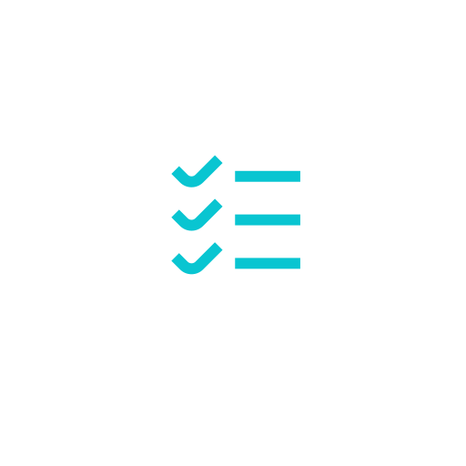
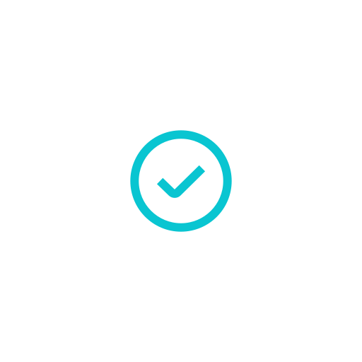
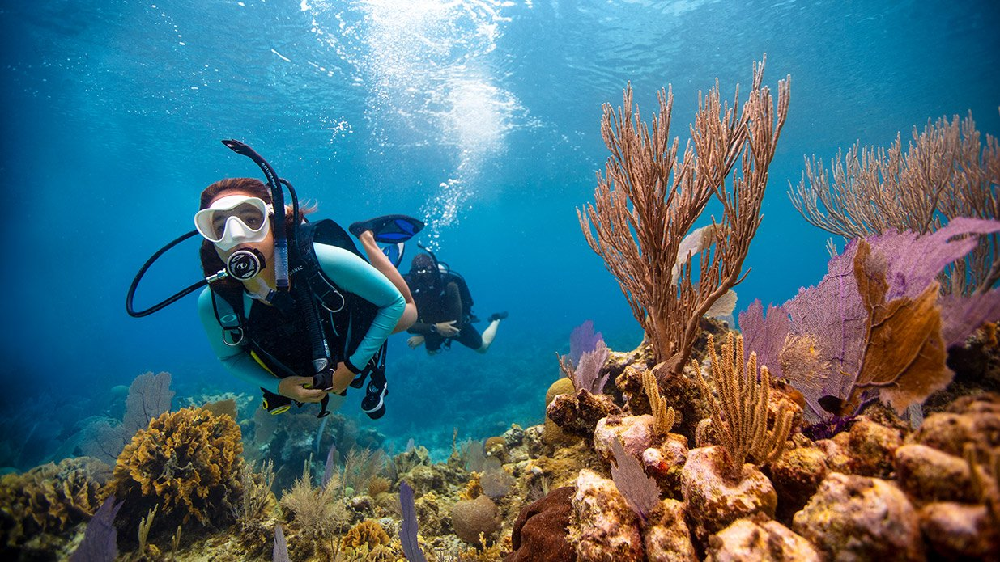
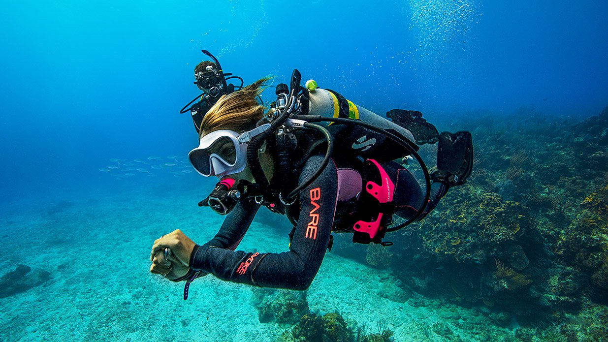

Avanzado
Buzo Avanzado de Aguas Abiertas.
Este curso propone desarrollar capacidades
que te convertirán en un buzo pofesional
Viajes
Isla de Coco e Islas Galapagos 14 mayo 2024
Mar Rojo, Egipto 5 Enero 2025

Rescue Diver
Contamos con un curso
de buzo de rescate

El curso SNSI Divemaster es una parte integral de los niveles profesionales de SNSI. ComoDivemaster podrás guiar a buzos certificados y además asistir a los Instructores SNSIdurante los cursos, tanto en las sesiones académicas como prácticas. El curso requiere un mínimo de 10 sesiones académicas y cinco sesiones en aguas abiertas.

El curso Advanced Open Water Diver trata de progresar en tus técnicas. Practicarás navegación y flotabilidad, probarás el buceo a profundidad y harás tres inmersiones de especialidad de tu elección (es como una bandeja de muestras de especialidad).